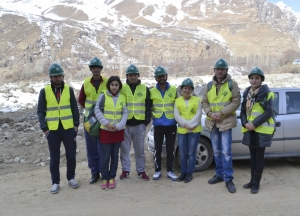
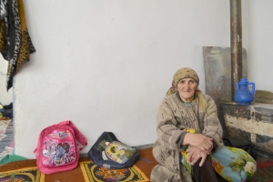
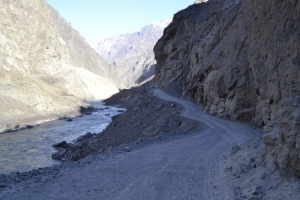

Building disaster resilience for mountain communities
{kind=link}
When disaster strikes, access constraints can severely affect timely humanitarian assistance to isolated and disaster-prone mountain communities. Local people often are forced to be self-sufficient in the first days and weeks following a disaster. Last year, Tajikistan’s vulnerable mountain communities were struck by flash floods, mudslides and a 7.2-magnitude earthquake. But what is being done to reduce the vulnerability of these at-risk communities and increase their skills as first responders?
Known in Tajikistan as "The Rooftop of the World", Gorno Badakhshan Autonomous Oblast province (GBAO province), a mountainous region in eastern Tajikistan, is highly prone to a range of disasters, from seasonal floods and glacial lake outbursts, to mudflows, landslides and earthquakes. The dearth of humanitarian organizations in the sparsely populated province, coupled with difficult access to remote villages, starkly increases local people’s vulnerability. For example, after a disaster, the only road that connects isolated mountain communities to the outside world is often blocked with rocks, soil, snow or water, cutting off people from external aid for weeks. Weather conditions can also prevent responders from using helicopters to reach affected people.
{kind=link}
Given these circumstances, local communities must often rely on their own capacities to respond to disasters. “In these isolated mountain communities, the spirit of volunteerism and practice of helping each other have always been high,” said Idris Jonmamadov from Focus Humanitarian Assistance (FOCUS), the only international organization working to improve the disaster resilience of local communities in GBAO province. “For centuries, people have been helping their neighbours in emergencies. We have only helped to systemize this practice and improved local people’s skills to prepare for and respond to disasters.”
To prepare people for disasters, FOCUS established a number of Community Emergency Response Teams across the region. Volunteers are trained to provide first aid, evacuate people, conduct search-and-rescue operations, and communicate with first responders and authorities. Team leaders are also trained to mobilize resources, trigger alert systems, use emergency stockpiles, organize camps, and arrange other life-saving activities before external aid arrives.
“Since FOCUS appeared, we have become one team. Previously, each of us used to act by him/herself and the response was chaotic. Now we follow our leaders and prescribed plans in a coordinated manner,” says emergency response team member Dilkusho Muborakshoev, who participated in the response to mudflows in Barsem village in GBAO province in July 2015. “Furthermore, we know each other from training sessions. As a result, we act much quicker, which is crucial in saving lives. Last year, when the floods started, we evacuated people in one hour instead of three,” he added.
Life-saving response
When a 7.2-magnitude earthquake hit Murgab, a district in GBAO province, in December 2015, the number of casualties and injuries was low, thanks to the effective response of community volunteers.
Yaftalieva Rezamo was affected by the earthquake. The 74-year-old woman recalls the first days of the response: “It was a cold winter day. Volunteers built tents and brought warm clothes, carpets and food. They found our family members and evacuated the injured. People were in a panic, and without the volunteers, the consequences would have been much worse. It is only thanks to volunteers that we survived.”
Aid organizations struggled to reach the affected area for four days. Rocks and heavy snow blocked the road, and unfavorable weather conditions made it impossible to use helicopters.
Spreading success
“The number of fatalities and injuries following disasters has significantly reduced since FOCUS started training local volunteers,” says Valijon Ranoev, OCHA’s Humanitarian Adviser in Tajikistan. Due to the established community emergency response teams, nobody died in last year’s floods in Barsem village. This is in sharp contrast to the events in Dasht village in 2002, when the lack of a volunteer team resulted in 24 fatalities when a similar-scale flood washed out the entire area.
{kind=link}
Tajikistan’s Government now recognizes the life-saving value of community response teams during a disaster. It has tasked emergency management authorities to learn from this success and propose ways of implementing this programme across the entire country.
As local as possible, as international as necessary
The lessons from Tajikistan have global implications. UN Secretary-General Ban Ki-moon has sent a clear message to world leaders that the World Humanitarian Summit (WHS), which takes place on 23 and 24 May in Istanbul, must be a key milestone to strengthen local capacity to disaster response.
In his report for the WHS, titled “One Humanity, Shared Responsibility”, he states that “people are the central agents of their lives and are the first and last responders to any crisis. Any effort to reduce the vulnerability of people and strengthen their resilience must begin at the local level first …”
Localizing response and investing in disaster preparedness is crucial for saving efforts, money and, more importantly, lives.